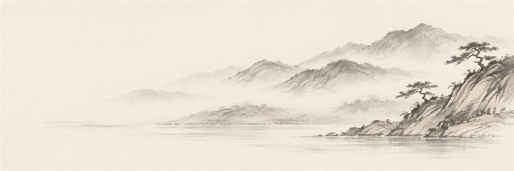
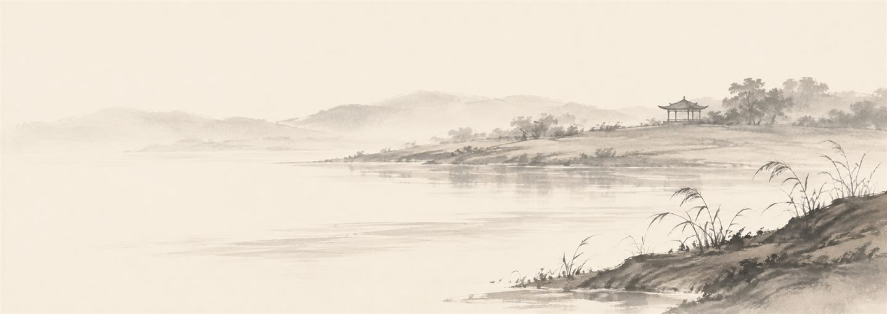

書畫｜圖版
展卷
山間、江岸、疏竹。三幅圖版可於圖框內橫向查看，文章仍可往下讀。
山間網站設計插圖 
江岸網站設計插圖 
疏竹網站設計插圖
學術閱讀
中國早期思想與文獻
以下保留個人學術網站原有的學術簡介與研究方向。
學術簡介
嚴浩然，國立成功大學中國文學系博士候選人，中國思想專攻。研究領域為先秦思想、荀子哲學、出土文獻思想與中國早期倫理與政治思想。
博士論文題目為《中國早期「直」的觀念之思想本源與演變研究》，結合傳世文獻、出土文獻與古文字材料，考察「直」在中國早期思想中的形成脈絡及其於倫理判斷、政治秩序與修養實踐中的多重意涵。
近年研究以儒家、道家及戰國諸子思想為主要範圍，關注德目概念、政治倫理、天人思想與出土文獻詮釋等議題。研究材料兼及傳世文獻與出土文獻，前者包括《論語》、《孟子》、《荀子》等經典，後者則涵蓋清華簡〈畏天用身〉、安大簡〈仲尼曰〉等重要材料。
中國早期「直」的觀念研究
博士論文主題，聚焦早期中國思想中的倫理判斷、政治秩序與修養實踐。
出土文獻與早期思想詮釋
關注清華簡、安大簡等材料與傳世文獻之思想關聯。
荀子哲學與德目概念研究
考察荀子思想中的倫理語彙、政治秩序與實踐問題。


題識｜來源
圖與文之間
插圖與文字各留一處空白，視線可以在兩者之間往返。
觀畫讀文
以短題籤點出圖版與閱讀段落的界線；正文仍使用橫排。
題跋｜留白與視線
留白在此用來分開近景與遠景。文字題跋置於圖框外，先呈現所見，再說明設計取捨；這是觀畫示例，不是對特定古畫的考釋。
圖版來源
三幅圖均是現有學術網站的設計插圖。原圖可獨立開啟，未使用本次參考站的作品、字型或聲音。
姓名古文字
此處嚴、浩、然三枚圖形依使用者提供的原圖顯示。圖形用於身分識別；年代、文字系統與歷史來源未作鑑定。